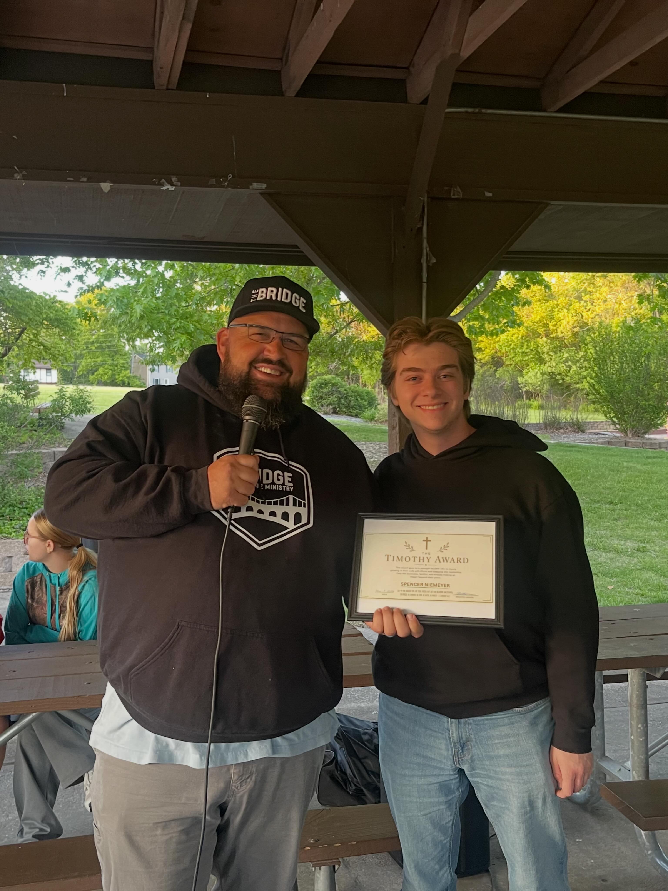

About Me

My name is Spencer Niemeyer, and I am a student at the University of Missouri-Columbia studying Computer Science and Data Science, with a minor in Mathematics. At Mizzou, I am primarily involved in a campus ministry called The Bridge, where I hold a student leadership position helping lead the ministry. During the summer of 2026, I had the opportunity to gain real world experience through a DevOps Internship at DataServ; going into the Fall 2026 semester, I will be continuing this internship as well as tutoring other computer science students at the Student Success Center at Mizzou. The goal I am focusing on the most right now is expanding my programming skills beyond low-level programming languages in order to showcase my abilities with a range of tasks and languages, as well as continuing to get internship opportunities to gain more professional experience. After college, I hope to go into software engineering or data science and I would like to work on projects that make a real difference.
Education Overview
- University: University of Missouri-Columbia
- Degrees: Bachelor of Science in Computer Science and Bachelor of Science in Data Science (with specialization in Computer Science)
- Minor: Mathematics
- Estimated Graduation: May 2029
- School: University of Missouri College of Engineering
Resume
Resume: Open My Resume
Resume Video: Spencer Niemeyer introduces himself and discusses his education and experience.